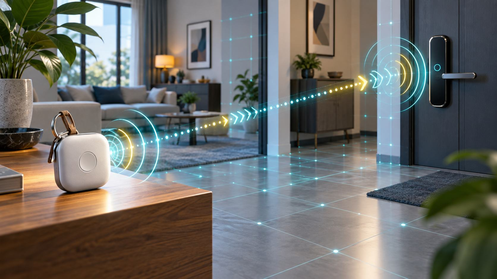

UWB là gì? Công nghệ định vị chính xác cho thiết bị thông minh
Ultra Wideband (UWB) là công nghệ vô tuyến tầm ngắn được tối ưu cho việc đo khoảng cách và vị trí tương đối giữa các thiết bị. Thay vì chỉ suy đoán “gần hay xa” từ cường độ tín hiệu, UWB đo thời gian tín hiệu truyền qua lại. Nhờ đó, thiết bị tương thích có thể xác định khoảng cách chính xác và trong một số cấu hình còn biết hướng của vật thể.
UWB hoạt động như thế nào?
UWB truyền các xung rất ngắn trên dải phổ rộng. Hai thiết bị trao đổi tín hiệu, đo thời gian bay (time of flight) rồi quy đổi thành khoảng cách. Vì sóng vô tuyến truyền gần tốc độ ánh sáng, sai số thời gian cực nhỏ cũng ảnh hưởng kết quả; phần cứng phải có đồng hồ và thuật toán chuyên dụng.
Một phiên ranging thường gồm thiết bị khởi tạo và thiết bị phản hồi. Chúng vẫn cần một kênh ngoài băng như Bluetooth Low Energy để khám phá nhau, trao đổi tham số và khóa phiên trước khi UWB bắt đầu đo. UWB vì thế thường bổ sung cho Bluetooth thay vì thay thế hoàn toàn.
Khác Bluetooth, NFC và GPS ra sao?
| Công nghệ | Điểm mạnh | Phù hợp |
|---|---|---|
| UWB | Đo khoảng cách chính xác, có thể xác định hướng, tốt ở cự ly gần | Tìm đồ chính xác, khóa số, định vị trong nhà |
| Bluetooth LE | Phổ biến, tiết kiệm điện, truyền dữ liệu và khám phá thiết bị | Phụ kiện, beacon, cảm biến, kênh thiết lập cho UWB |
| NFC | Cự ly rất ngắn, thao tác chạm rõ ràng | Thanh toán, thẻ truy cập, ghép nối |
| GPS/GNSS | Định vị tuyệt đối ngoài trời trên phạm vi toàn cầu | Bản đồ, dẫn đường, theo dõi phương tiện |
Không nên nói UWB “chính xác tuyệt đối”. Android mô tả khả năng ranging khoảng 10 cm trong điều kiện phù hợp, nhưng kết quả thực tế phụ thuộc antenna, hướng cầm, vật cản, phản xạ đa đường, khoảng cách và cách triển khai sản phẩm.
Những ứng dụng thực tế
- Tìm đồ: điện thoại hiển thị cả khoảng cách và hướng tới thẻ theo dõi ở gần.
- Khóa xe và khóa cửa: xác minh thiết bị được ủy quyền đang ở đúng vị trí, không chỉ xuất hiện trên mạng.
- Nhà thông minh: điều khiển thiết bị theo phòng hoặc hướng người dùng đang trỏ tới.
- Kho và nhà máy: định vị công cụ, pallet hoặc robot bằng hệ thống anchor đã hiệu chuẩn.
- Trải nghiệm không gian: tương tác AR, chuyển nội dung và tìm người/thiết bị ở gần.
Tại sao đo khoảng cách có thể an toàn hơn RSSI?
Bluetooth beacon truyền thống thường ước lượng khoảng cách từ RSSI, nhưng cường độ tín hiệu thay đổi mạnh khi có tường, cơ thể người hoặc công suất phát khác nhau. UWB dựa vào thời gian truyền và có thể dùng cơ chế Secure Time Stamp (STS) để bảo vệ phép đo tốt hơn trước hành vi giả mạo hoặc relay.
Tuy nhiên, có chip UWB không tự động biến một sản phẩm thành khóa an toàn. Hệ thống vẫn cần xác thực mật mã, quản lý khóa, chống replay, giới hạn quyền, cập nhật firmware và phương án phục hồi khi mất thiết bị.
Điều kiện tương thích
Cả hai đầu phải có phần cứng UWB và hỗ trợ cùng profile/protocol. Tên dòng điện thoại không đủ để kết luận vì một số phiên bản theo khu vực hoặc cấu hình có thể khác nhau. Trên Android, ứng dụng có thể kiểm tra feature android.hardware.uwb; tài liệu Android yêu cầu Android 12 trở lên cho API Jetpack UWB. Trong hệ sinh thái Apple, Nearby Interaction cung cấp khoảng cách và, trên thiết bị phù hợp, hướng tới peer hoặc phụ kiện.
Khi mua khóa, tracker hay thiết bị IoT, hãy kiểm tra:
- Model điện thoại cụ thể có UWB hay không.
- Phụ kiện hỗ trợ hệ sinh thái và profile nào.
- Tính năng có hoạt động ở quốc gia/khu vực đang dùng không.
- Ranging nền, quyền ứng dụng và yêu cầu Bluetooth.
- Cơ chế fallback khi UWB bị tắt hoặc không khả dụng.
Giới hạn cần biết
- Phạm vi ngắn: UWB không thay GNSS hay mạng di động để theo dõi đường dài.
- Vật cản: tường, kim loại, cơ thể người và hướng antenna có thể làm giảm chất lượng.
- Không phổ cập: nhiều điện thoại và phụ kiện vẫn không có chip UWB.
- Tiêu thụ năng lượng: ranging liên tục cần được quản lý theo phiên và ngữ cảnh.
- Quyền riêng tư: dữ liệu khoảng cách/hướng tiết lộ hành vi không gian, cần sự đồng ý và thời gian lưu hợp lý.
UWB có đáng quan tâm?
UWB đáng giá khi sản phẩm cần trả lời câu hỏi “vật thể ở chính xác đâu so với tôi?” chứ không chỉ “thiết bị có ở gần không?”. Với tracker, khóa số và tự động hóa theo vị trí, khác biệt này tạo ra trải nghiệm tự nhiên hơn. Nhưng người mua nên đánh giá cả hệ sinh thái, tương thích và chính sách bảo mật thay vì chỉ nhìn thấy nhãn UWB.